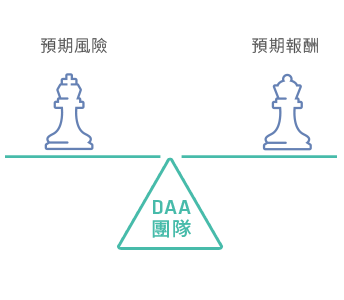
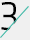

多元資產
因時制宜
資產類別多元
超過40年的大數據
資產類別多元
超過40年的大數據
收益來源多元
各種收益機會一次網羅
研究觀點多元
集合股債團隊強大後援
產品選擇多元
提供各種投資需求不同選擇
Q:
一檔多元組合型基金可以涵蓋多少標的？
以聯博多元資產收益組合基金(本基金得投資於非投資等級之高風險債券基金且配息來源可能為本金)為例，其子基金目前持有股債總數約達3000檔*，透過高度分散策略降低個別持股投資風險。
*投資組合得隨時間有所變動。資料來源：聯博，截至2015年6月30日
Q:
如何才能追求長期的投資收益？
聯博研究顯示，實現長期投資收益的關鍵，除了掌握投資收益具有吸引力、成長潛力的資產，還需搭配動態的風險管理策略。
Q:
多元資產配置適合哪些投資人？
除了需要做好資產配置、渴望尋求收益的投資人以外，事實上，聯博集團運用多元資產投資策略在退休金管理上有多年經驗，在英、美、日各國都獲得肯定，因此也適合正在規劃退休，或是已經退休的族群作為投資標的選擇之一。
幣別多元：多種計價幣別彈性運用資金
聯博多元資產系列基金提供新台幣、美元、歐元、人民幣、加拿大幣、澳幣及南非幣，以多種幣別滿足投資人不同需求。
首頁
收益來源多元
各種收益機會一次網羅
跨越資產與國界的新收益方案
聯博多元資產投資策略
多元資產投資策略之所以稱做「多元」，是因其投資範圍包含不只是股票、債券等傳統單一資產，而涵蓋了更多不同的資產類別與投資標的。期望在各種市場環境下，以多元的資產投資，創造出廣泛的收益來源。
聯博集團投資管理團隊擁有超過40年的多元資產投資經驗，連續不間斷地追蹤全球各類資產走勢、評價與報酬表現，從中分析出當下較具投資吸引力的資產類別。藉由系統性分析瞭解目前各資產與區域的風險與報酬機會，其中包含成熟與新興市場區域與單一國家的股票、債券、貨幣，以及另類資產、商品……等。
投資涵蓋範圍
資產類別不設限
-
成長型
+股票
大型股、中小型股債券
投資等級債、高收益債、新興市場債 -
通膨敏感型
+通膨連結產品
房地產
大宗商品
-
防禦型
+主權債
貨幣
選擇權策略
布局領域零界線
-
成熟國家0+
美國、歐洲不含英國、英國、日本、亞洲不含日本、加拿大
-
新興國家0+
亞洲、歐非中東、拉丁美洲
研究各種影響市場因素
- 投資評價和品質
- 通膨水準
- 市場情緒
- 成長因素
- 政策刺激
- 信用風險
- 風險指標
三大投資流程
研究分析
- 運用聯博獨特的風險/報酬預測工具
- 聯博全球經濟研究團隊進行由上而下的總體經濟研究分析
- 聯博股票、債券團隊透過由下而上的研究分析，精選投資標的
- 針對特定主題進行深度研究

投資組合策略
- 權衡風險/報酬/收益/成長潛力
- 決定各類資產曝險比例
- 研擬投資組合執行策略
執行投資組合配置
- 每日審視風險
- 每日檢視是否有調整必要
- 選擇投資工具
- 審視投資方針
- 交易執行
聯博多元資產投資方案
運用全球佈局，以度過各種市場環境
採取思考慎密且不
受限制的投資方式
整合投資組合
動態管理
以多元化回報實現
期望結果
聯博的多元資產策略將傳統收益來源範圍再擴大，不僅是債券孳息、股息收入，還包含特別股、REITs、房貸證券，甚至是選擇權權利金的收益，再加上個別資產的潛在資本利得，讓投資人一次掌握收益和成長的投資機會。
收益來源有別於傳統，收益可來自四面八方
成長股、中小型股、高息股、
不動產投資信託等
政府公債、投資等級公司債、
高收益債、房貸收益等
ETF、衍生性金融商品
(如選擇權與期貨)等
- 股票
- 債券
- 其他
控制風險才是追求收益的最佳策略
聯博集團獨創DAA動態資產配置策略
在各種市場環境下監控每個投資組合，適時彈性調整股債比例，為投資人在追求收益與管理波動風險之間取得平衡。
-
景氣擴張/利率上升
股多債少
-
景氣復甦/低利環境
股債均衡
-
景氣衰退/利率下滑
股少債多
了解更多DAA策略
DAA動態資產配置策略
透過風險指標、市場情緒、信用狀況、利率水準與投資評價等五大指標，結合基本面及量化研究來判讀市場訊號、深入檢視模型結果並進行資產配置壓力測試，進而提前察覺風險所在、及早調整投資組合。
DAA目標並非預測市場震盪發生時機，
而是在市場風險開始出現轉變時提出預警
DAA幫助投資組合度過各市場風暴
2010.05
希臘債務危機
2011.03
日本311大地震
2011.07
歐債危機爆發，造成全球股市重挫
2013.06
美國聯準會釋出可能提前退場訊息，引發股債市場震盪
2014.10
對經濟復甦疑慮增加，全球金融市場波動劇增
2015.08
市場擔憂中國經濟引發全球資產價格大幅走跌
DAA策略的因應對策
聯博投資團隊經由DAA預先偵測到歐股與全球股市波動度同步增加，因而建議減碼全球股票部位。
DAA策略的因應對策
在災難接連發生之後，根據DAA監測，日股投資風險大增，但全球股市投資風險僅微幅增加，因此建議維持全球股票配置。
DAA策略的因應對策
聯博投資團隊在股市波動度仍低於長期平均時透過DAA發現歐元區信用利差已悄然上升、危機蔓延一觸即發，因此在全球股市重挫前，提前減碼股票部位，減緩投資組合受衝擊的程度。
DAA策略的因應對策
微幅調整固定收益部位以降低風險；持續看好股市前景。
DAA策略的因應對策
市場賣壓僅是短期現象，尚無須調整投資組合。
DAA策略的因應對策
聯博投資團隊自2015年6月已開始減少股票加碼部位，逐漸將投資部位降到中立的水準。
2010
2011
2011
2013
2014
2015
資料來源：聯博
聯博集團投資團隊優勢：研究涵蓋15,000家以上固定收益發行機構、全球66間交易所掛牌之5470家企業，與全球20多國的8種房地產類別(截至2015年3月31日)。
聯博集團多元資產團隊優勢
集團中有27位多元資產投資專家，成員平均業界經驗達21年，總管理資產1,170億美元*。
*資料來源：聯博，截至2015年9月30日+
結合聯博集團全球資源
-
0
國家
-
0
城市
-
0
研究分析師
-
0
投資組合經理人
聯博投資管理據點遍及全球，不分地區與時區，同步分享全球多元觀點與投資經驗，整合出符合客戶需求的投資方案。
資料來源：聯博，截至2015年9月30日全面追求
收益機會
歐亞債券、全球高收益債券同步掌握
多元佈局、高度分散
聯博
債券團隊
精選
潛力股票
偏好成長型企業
偏好高獲利、高品質、成長性可延續之企業
聯博
股票團隊
管理
投資風險
動態調整股債比例
運用衍生性金融商品，及時調整投資風險值
聯博
多元資產團隊
收益資產
成長資產
優化機制資產
多元收益
投資方案
聯博多元資產管理團隊所管理資產持續成長
1000
1050
1100
1150
1200
1250
1300
億美元資料來源：聯博，2015年6月30日
21國投資管理據點
美國
加拿大
墨西哥
巴西
阿根廷
英國
法國
德國
盧森堡
瑞典
瑞士
巴林
義大利
荷蘭
丹麥
澳洲
日本
香港
韓國
台灣
新加坡
除了在台核備銷售2檔多元資產境外基金，聯博投信更於2014年發行3檔多元資產收益基金，主要投資範圍涵蓋成熟與新興市場，全球、歐洲與亞太區域，抓緊每一潛力市場的投資機會。
聯博投信持續發展多元的收益投資策略，
旗下發行與總代理之多元產品：
^本公司目前之全權委託投資帳戶為保險公司委託聯博投信代操所推出的類全委保單產品之連結標的。
*聯博-成熟市場多元收益基金 (AllianceBernstein–Developed Markets Multi Asset Income Portfolio ) 於2014年12月11日更名，舊名為聯博–全球保守型基金 (AllianceBernstein–Global Conservative Portfolio)。該基金之投資目標及政策亦同時修訂，詳細內容請參考基金公開說明書及投資人須知。
研究觀點多元
集合股債團隊
強大後援
產品選擇多元
提供各種投資
需求不同選擇